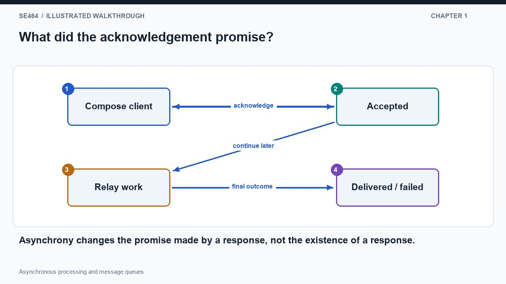
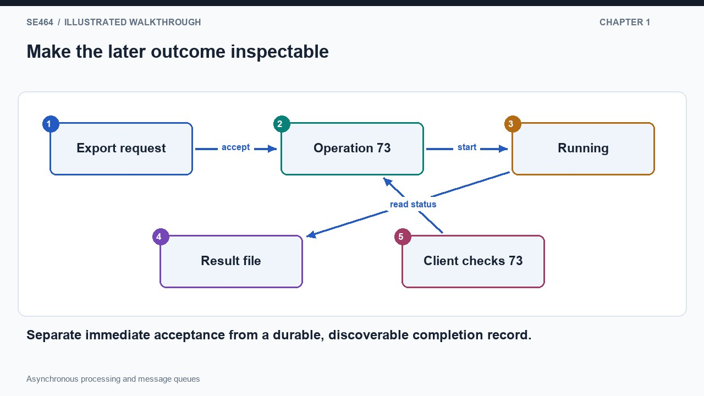
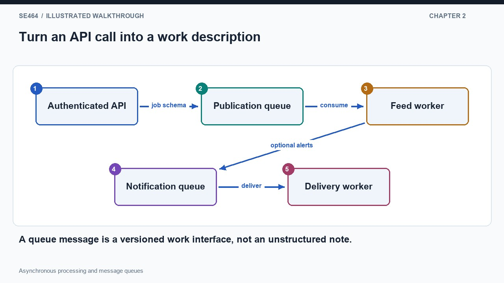
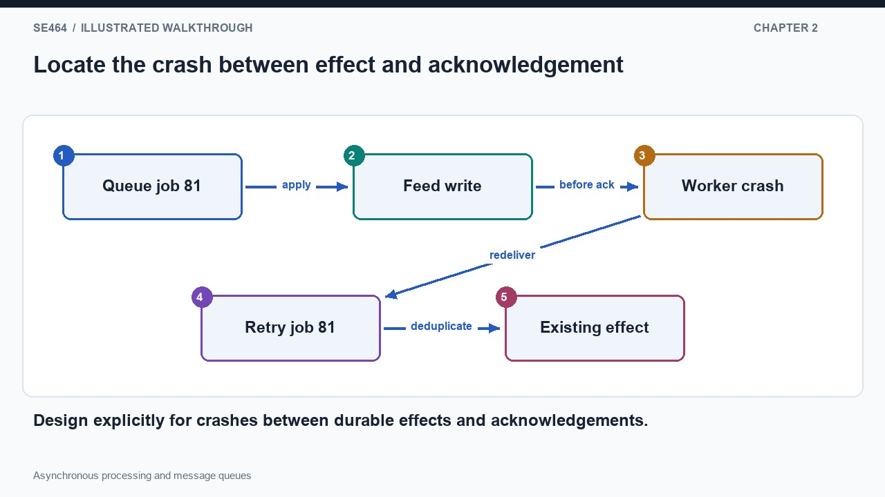
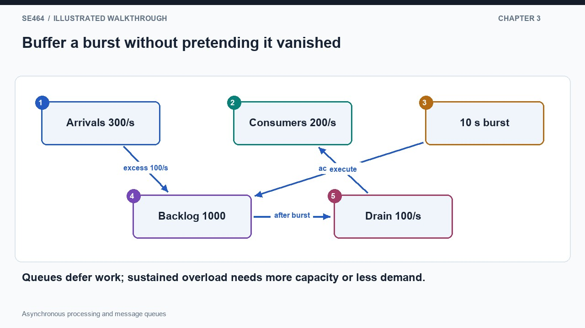
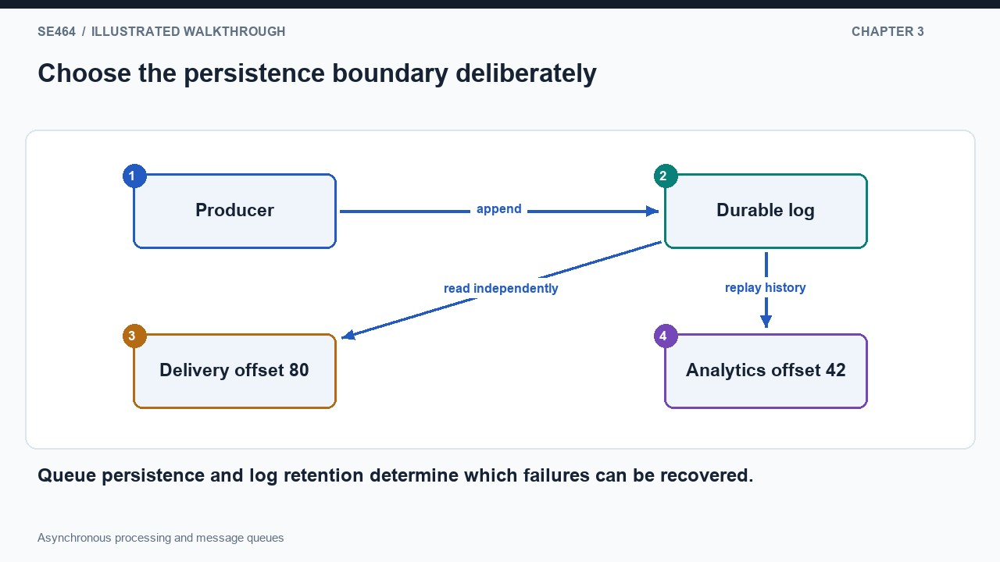
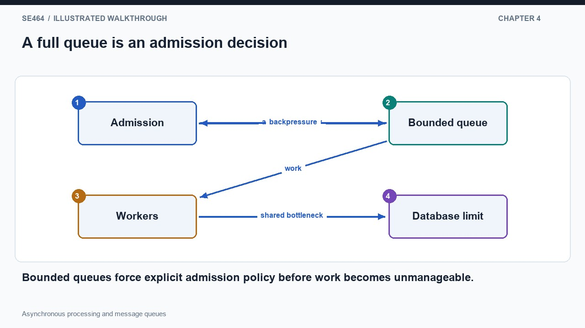
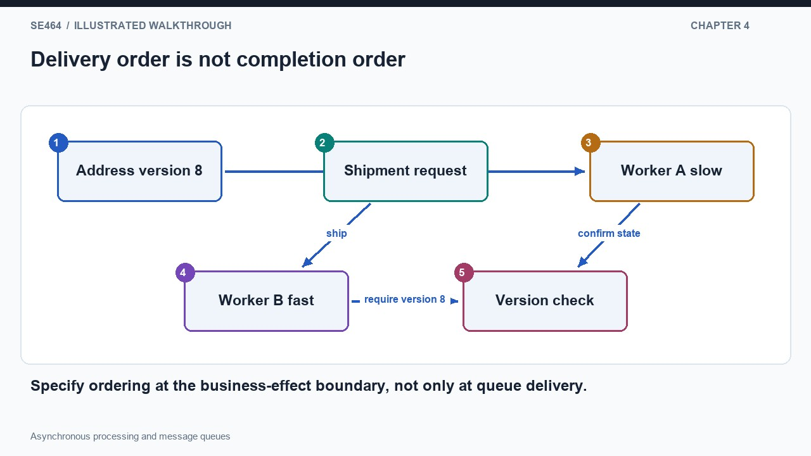

Separate acceptance from completion and design queue-based work for retries and backpressure.
Sending an email can involve several relays before the destination accepts it. If the original client waits for that entire chain, a slow or temporarily unavailable destination keeps the compose interface waiting. An asynchronous contract lets the first service accept responsibility and return before final delivery. The response still matters: without it, the client cannot distinguish acceptance from a lost network request. But its meaning has changed from completed to accepted for later work. Draw two separate milestones on the timeline, first acceptance and then delivery. A quick response is honest only if the interface describes the first milestone. The user should not see a delivery guarantee when the system has merely stored work that it intends to attempt.
A synchronous request returns after the promised operation finishes; an asynchronous request can return once the system accepts responsibility for later work. Both can use HTTP. The important distinction is the contract, not whether a response exists. Sending an email, preparing a large download or provisioning a virtual machine can return an operation identifier while the requested work continues elsewhere.
A report export may take several minutes, but the user still needs the finished file or a useful failure explanation. Create an operation record and return its identifier immediately after durable acceptance. The client can revisit that record while its state moves from pending to running to successful or failed. A callback is another option when the receiver has an accessible endpoint, but it needs authentication and retry handling. A browser that closes is not automatically a reliable callback server. For a consequential operation, hiding all failures in an operator log leaves the user unable to act. Choose the feedback path together with the acceptance contract, and retain the result long enough for an interrupted client to recover it.
Clients that need an outcome can poll an operation record, receive an authenticated callback or use another notification channel. Define pending, running, successful and failed states and explain retention. A webhook needs an accessible endpoint and its own retry policy. A user-facing acknowledgement should say accepted when completion is still uncertain; operational logs alone are rarely sufficient feedback for a consequential user action.


Only if the API explicitly promises that milestone; an asynchronous acceptance usually does not.
A user publishes a short message. The API authenticates the session, records the request, and places a publication job on a queue. The job contains the author, message identifier, content reference, and fields the publication worker needs. That schema plays the role of an interface: a producer and consumer must agree on its meaning even though they do not run simultaneously. The publication worker later finds the followers and updates their feeds. Optional notification jobs go to another queue because sending an alert has different dependencies and retry behavior. Drawing these stages explains why one cheap API call can trigger thousands of later operations without making the user wait for every individual feed write and device delivery.
A queue lets a producer describe work and hand it to consumers that run later. The message schema is an interface contract, including identifiers, required fields and version behavior. In the tweet example, one service accepts publication work, another expands it into feed updates, and another handles optional notifications. This separates stages with different cost, latency and failure requirements.
Now stop a worker immediately after it adds a post to a feed but before it acknowledges the queue message. The broker may deliver that message again because completion was never confirmed. Without duplicate protection, the same post can appear twice. An idempotency key lets the consumer recognize that this logical operation has already produced its effect. A second failure window exists at publication: updating business data and then separately enqueueing a message can leave a committed post with no downstream work if the process crashes between them. A transactional outbox records the business change and pending event together, then publishes the event later. Reliability depends on these boundaries, not merely on calling the queue durable.
Acknowledge consumer work after the intended durable effect, then plan for crashes between effect and acknowledgement. Retried work may repeat, so use idempotency keys or transactional coordination where required. Durable acceptance also depends on how publication reaches the queue; changing a database and publishing separately creates a failure gap. A transactional outbox is one design for recording the event alongside the business change.


The job can be delivered again; the feed update must tolerate repetition.
Suppose requests arrive at three hundred jobs per second for ten seconds, while consumers can process two hundred per second. The queue gains about one thousand jobs during the burst. If arrivals then fall to one hundred per second, the spare processing capacity drains that backlog in roughly ten more seconds, assuming constant job cost. This is demand smoothing: the work is delayed, not eliminated. Producers and consumers can be sized separately because enqueueing a job is different work from executing it. However, the broker must still accept and retain the backlog safely. A useful capacity argument accounts for the burst duration, consumer throughput, and acceptable waiting time instead of saying that a queue makes the system scale.
Queues distribute pending work across consumers and smooth a temporary mismatch between arrival and processing rates. Producers and consumers can scale independently, but the broker has its own capacity and durability limits. An in-process queue is simple but may vanish with the process. A separate broker or replicated service provides different persistence and recovery options, with additional operational cost and coordination.
An in-process queue is convenient for a thread pool, but its pending work can disappear when the process exits. A separate queue service outlives an application restart, provided its own persistence and recovery configuration support that promise. A replicated broker adds another failure boundary and additional coordination. Retained logs add a different property: reading a record does not necessarily delete it, and consumers track their own positions. One analytics consumer can replay older records without forcing a delivery consumer to repeat the same history. These choices determine recovery behavior and storage cost. Draw the producer, storage boundary, and consumer position explicitly rather than representing every queue product as the same anonymous cylinder.
Pull-based and push-based delivery affect connection management rather than determining business correctness. Retained logs differ from destructive work queues: a log keeps records for replay, and consumers track progress. Kafka illustrates partitioned logs, although the slides’ ZooKeeper discussion is historical. Select retention, consumer grouping and acknowledgement semantics deliberately instead of assuming all products listed as queues behave identically under load or failure.


No. It delays the symptom while backlog grows; capacity, admission or demand must change.
Continue accepting work faster than workers can finish it and a finite queue eventually fills. At that point the system must delay the producer, reject new work, shed a lower-priority class, or increase usable capacity. Pretending that acceptance still succeeds merely moves the failure to an unknown later time. Monitor the oldest waiting job as well as queue depth: one hundred very expensive jobs may be worse than ten thousand trivial ones. Adding consumers helps only if the downstream database or external provider can support them. Draw backpressure as a signal from the saturated stage toward admission, not as a mysterious error at the end. The goal is to preserve a truthful service contract under overload.
A bounded queue must eventually reject, delay or otherwise regulate producers when it cannot safely accept more work. This backpressure is a protective control rather than merely an error to hide. Monitor oldest-message age as well as depth, because a small queue of expensive jobs can still violate latency goals. Retry policies should use limits and backoff instead of continuously recycling failures.
An account receives an address change followed by a shipment request. Even if a queue delivers them in that order, two workers can finish the shipment first while the address update is still running. Retrying an older change can create a second ordering problem after newer work has already completed. When order matters, choose a scope such as account identifier and coordinate processing or use version checks within that scope. Putting every account on one globally serial path avoids some races but sacrifices unnecessary parallelism. Repeatedly failing jobs also need bounded retries and a controlled recovery path; otherwise one poison job can consume capacity forever. Make the business invariant determine the ordering rule, rather than assuming the broker's terminology guarantees it.
Ordering is scoped to the chosen system and partitioning design. Many brokers offer useful per-key or per-partition order, but concurrent consumers and retries complicate observed completion order. Group related work by key or use sequence checks when order matters; merging everything into one giant message is not the only solution. Keep public clients behind an authenticated application boundary unless the messaging service explicitly supports that access model.


Yes, for example through account-key partitioning and ordered processing, while allowing different accounts to proceed independently.
An operation ID or status resource and a clear acceptance contract, with eventual outcome retrieval or notification.
A message can be processed again after an uncertain acknowledgement or retry; repeated processing must not repeat an unintended effect.
Oldest-message age and processing latency, alongside arrival/processing rates and failure/retry counts.
Design asynchronous lecture-video transcoding with reliable user feedback.
Accept durably and return a job ID; workers claim jobs and write results idempotently; update status after durable output; retry transient errors with backoff and isolate poison jobs; expose status and optional authenticated notification; apply backpressure when backlog exceeds limits.
Questions-only worksheet · Worked answer sheet
A shipping worker receives a label-generation job, acknowledges it immediately, and then calls the label provider. The worker crashes before making that call. The queue removes acknowledged jobs, and no other durable job state exists. The team wants eventual completion after a worker crash and can supply a stable idempotency key to the provider. Which change best addresses the stated failure while limiting duplicate labels?
Best answer: C.
Use a stable job identifier as the provider idempotency key, durably record the resulting label or completed state, and acknowledge after that durable outcome. A crash before completion leaves work available for retry. A crash after the provider acted but before local acknowledgement can cause another attempt, so the provider must return or reuse the same logical result for the same key. Moving the acknowledgement alone improves redelivery but does not prevent duplicate external effects. Retain enough state to reconcile uncertain outcomes.
The safe boundary depends on both broker redelivery and the external operation’s repeat behavior. One acknowledgement cannot atomically cover unrelated systems by itself.
A document-rendering queue starts empty. Jobs arrive at 75 per second for four minutes while workers complete 45 per second. After the burst, arrivals fall to 25 per second and service capacity stays at 45. Assume constant rates, no retries and unlimited waiting space for this calculation. Find the peak backlog and the time to drain after the burst. Recommend an acceptance or capacity policy if the service promises no growing backlog under sustained demand.
During the burst the backlog grows at 75 − 45 = 30 jobs per second for 240 seconds, reaching 7,200 jobs. Afterwards it drains at 45 − 25 = 20 jobs per second, requiring 7,200 / 20 = 360 seconds, or six minutes. A queue absorbs this temporary excess but cannot absorb 75 jobs per second indefinitely with capacity 45. For sustained overload, add effective processing capacity or bound admissions with explicit retry/backoff guidance; monitor job age and retain capacity headroom rather than targeting exact saturation.
A temporary burst and persistent overload require different responses. Buffering changes timing, not long-run processing capacity.
A repair-order API commits an order to SQL and then publishes a dispatch job to a broker. A crash between these steps leaves a valid order that no technician ever receives. Publishing first causes the opposite risk: a worker can receive a job for an order that later fails to commit. Propose a design that closes this two-write gap without assuming SQL and the broker share a distributed transaction. Include relay and consumer crash behavior.
Write the order and an outbox record with a stable event ID in one SQL transaction. A relay reads committed outbox records, publishes them, and records progress after broker confirmation. If it crashes after publication but before progress is saved, it may publish the same event again; the consumer must deduplicate or make dispatch creation idempotent by that event or order ID. Monitor old outbox records and retry safely. This ensures a committed order leaves durable publication intent, although delivery remains asynchronous and requires a functioning relay.
The outbox moves the atomicity boundary into one durable database. It prevents lost intent but deliberately retains duplicate-safe retry requirements.